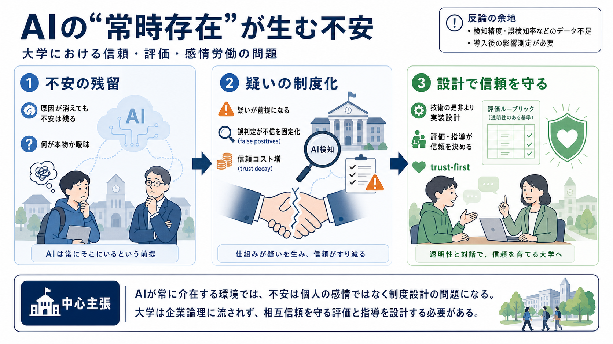

Key idea
原因が消えても不安は残る
不安が「消えない」仕組み
不安が「消えない」仕組み

著者の出発点は個人的な anxiety（不安）。しかしそれは一時的なストレスではなく、AIが“常時存在”することで現実感と信頼が摩耗していく問題として描かれます。
不安はストレスのように出来事が終われば回復するものではなく、AIの浸透によって「原因が消えても残り続ける」状態として理解されます。
AI検知や「善い／便利なAI」という語りは、意図が不正対策でも、教育・研究で土台になる相互信頼そのものを削る可能性があります。
著者は emotional labour / affective labour の概念で、権力側が未処理のケアや感情処理を下位者（若手・学生）に押し付ける構造を批判します。
感情労働の搾取ロジックと、AI産業／一部の大学運営のロジックには類似がある、というのが著者の主張です。
著者は、AI産業が 成果（results） や 生産性（productivity） を誇張し、根拠や条件が見えない形で振る舞う点に警戒を示します。
「AIは中立」「検知は正義」という前提は、教育・研究の相互信頼を守る設計を見落としうるため、著者は疑いの目を向けます。
大学が企業に取り込まれることで、知の創出と教育という使命が薄れ、「成果の見せ方」や「導入の説明」が優先されていく危機が語られます。
この文章は断定が強い一方で、AI検知ツールの精度・誤検知率などの技術的評価データは十分に提示されていません。
著者の結論は、AIの是非を単純化するより、役割定義を企業フレームに委ねず、評価・指導を通じて相互信頼を守ることが抵抗になりうる、という点です。
個人の不安を出発点にしつつ、感情労働・制度・AI産業の政治性まで含めて読み替えることで、大学の使命を守る方向性が見えてくる——それがこの文章の推進力です。
以下はこの要約で用いた中心概念の一般的な参照先（著者名・文献特定は未確定）。必要なら、元テキストの引用情報に合わせて精密化できます。
No references found